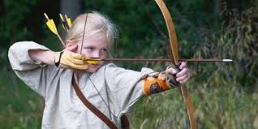
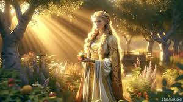
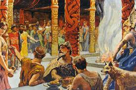

Infancia
En la cultura nórdica, la infancia era una etapa crucial, marcada por la educación en habilidades básicas y la enseñanza de valores como la valentía y la lealtad. Los niños aprendían a través de juegos, canciones y la observación de los adultos. Las familias eran responsables de inculcar la moralidad y las tradiciones.
Juventud
Durante la juventud, los varones comenzaban su entrenamiento como guerreros, mientras que las mujeres se preparaban para administrar el hogar. Las actividades incluían prácticas de combate, navegación y participación en ceremonias religiosas. También era el momento de aprender habilidades específicas como la caza, la costura y el comercio.
Vida Adulta
La vida adulta estaba centrada en el trabajo, el matrimonio y el cumplimiento de roles dentro de la sociedad. Los hombres trabajaban como agricultores, pescadores, comerciantes o guerreros, mientras que las mujeres administraban el hogar, cuidaban de los hijos y participaban en actividades textiles. Las asambleas, conocidas como *Thing*, eran un lugar clave para la toma de decisiones comunitarias.

Tradiciones Funerarias
Las tradiciones funerarias nórdicas incluían entierros y cremaciones, dependiendo del estatus social del difunto. Los guerreros y nobles a menudo eran enterrados con barcos funerarios y ofrendas, mientras que las almas de los valientes se creía que iban al Valhalla o al Fólkvangr. Estas ceremonias eran profundamente espirituales y marcaban el fin del ciclo de la vida.
